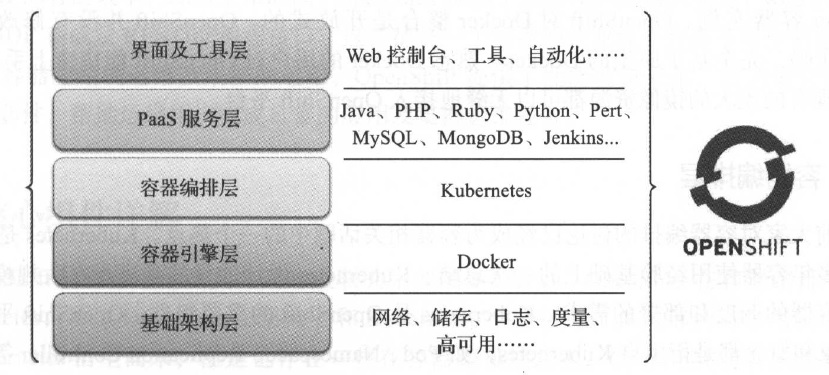
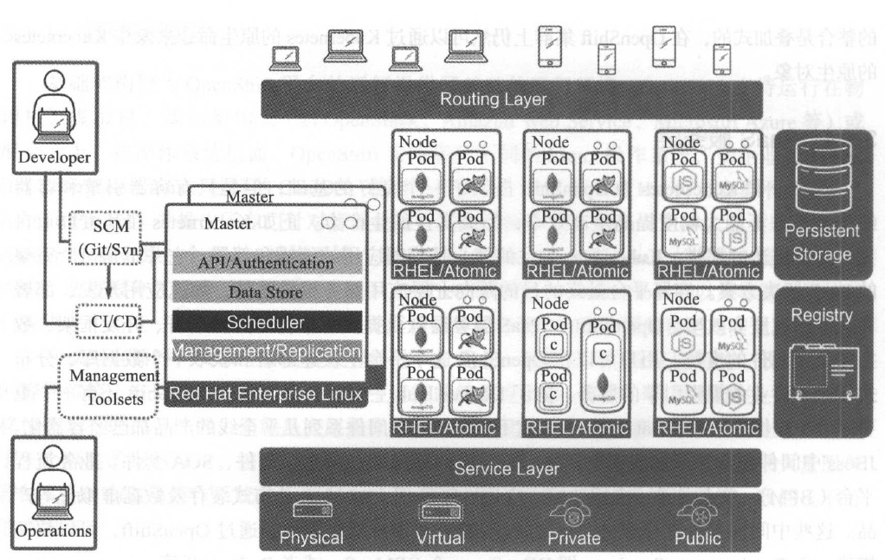
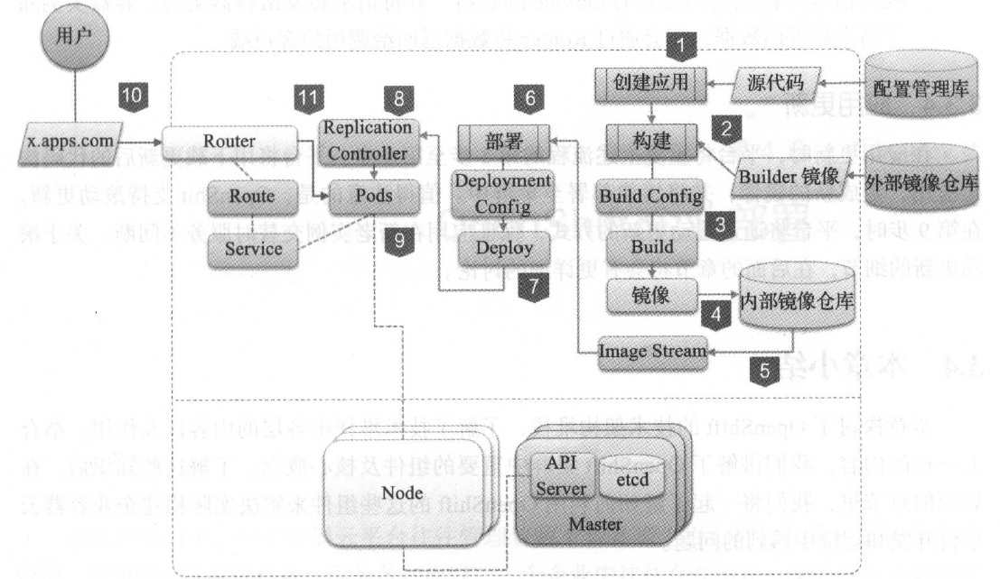

3. OpenShift 架构探秘¶
在上一章中，我们通过模板部署了一个前端PHP 应用及一个后端MySQL 数据库。对用户而言，部署的过程十分简单，通过几次鼠标单击即可完成应用的部署。但在用户便利的幕后， 其实OpenShift 平台为用户完成了大量操作。在这一章，我们将会深入了解应用部署背后的故事，深入了解OpenShift 容器云的架构。
3.1. 架构概览¶
从技术堆栈的角度分析，作为一个容器云， OpenShift 自底而上包含了以下几个层次：基础架构层、容器引擎层、容器编排层、PaaS 服务层、界面及工具层，如图3-1 所示。
图3-1 OpenShift 技术堆栈
3.1.1. 基础架构层¶
基础架构层为OpenShift 平台的运行提供了基础的运行环境。OpenShift 支持运行在物理机、虚拟机、基础架构云（如OpenStack 、Amazon Web Service 、Microsoft Azure 等）或混合云上。在操作系统层面， OpenShift 支持多种不同的Linux 操作系统，如企业级的Red Hat Enterprise Linux 、社区的CentOS 。值得一提的是， 2015 年Red Hat 针对容器平台启动了Atomic Project ，并推出了专门针对容器化运行环境的操作系统Atomic Host。从技术上来看，Atomic Host 也是一个Linux 操作系统， 是基于Red Hat 的企业版Linux 的基础上优化和定制而来。通过根分区只读、双根分区、RPM OSTree 等特性， Atomic Host可以为容器应用的运行提供一个高度一致的环境，保证在大规模容器集群环境中容器应用的稳定与安全。
在谈到容器时，大家经常会提及容器的一个优点，那就是可以保证应用的一致性。同样的容器镜像，在开发、测试和生产环境中运行的结果应该是一致的。但是容器的一致性和可移植性是有前提条件的，那就是底层操作系统的内核及相关的配置要一致。容器为应用提供了一个隔离的运行环境，这个隔离的实现依赖于底层Linux 内核的系统调用。如果大量服务器的Linux 内核及操作系统的配置不能保证一致，那么容器运行的最终结果的一致性也不可能有保障。
Note
要了解更多关于Atomic 容器操作系统的信息可以访问Atomic Project项目主页：http://www.projectatomic.io/ 。
3.1.2. 容器引擎层¶
OpenShift目前以Docker作为平台的容器引擎。Docker 是当前主流的容器引擎，已经在社区及许多企业的环境中进行了检验。事实证明Docker 有能力为应用提供安全、稳定及高性能的运行环境。OpenShift 运行的所有容器应用最终落到最底层的实现，其实就是一个个Docker 容器实例。OpenShift对Docker整合是开放式的。OpenShift并没有修改Docker的任何代码，完全基于原生的Docker 。熟悉Docker 的用户对OpenSh的能快速上手。同时，Docker 现有的庞大的镜像资源都可以元缝地接人OpenShift 平台。
3.1.3. 容器编排层¶
目前大家对容器编排的讨论已经成为容器相关话题中的一个热点。Kubenerters 是Google在内部多年容器使用经验基础上的一次总结。Kubenerters 设计的目的是满足在大规模集群环境下对容器的调度和部署的需求。Kubenerters 是OpenShift 的重要组件， OpenShift 平台上的许多对象和概念都是衍生自Kubenerters ，如Pod 、Namespace 、Replication Controller 等。与对Docker 的集成一样， OpenShift 并没有尝试从代码上定制Kubenerters, OpenShift 对Kubenerters的整合是叠加式的，在OpenShift集群上仍然可以通过Kubenerters 的原生命令来操作Kubenerters的原生对象。
3.1.4. PaaS 服务层¶
Docker 和Kubenerters 为OpenShift 提供了一个良好的基础，但是只有容器引擎和容器编排工具并不能大幅度提高生产效率，形成真正的生产力。正如Kubenerters 在其主页上自我介绍所描述的那样， Kubenerters 关注的核心是容器应用的编排和部署，它并不是一个完整的PaaS 解决方案。容器平台最终的目的是向上层应用服务提供支持，加速应用开发、部署和运维的速度和效率。Open Shift 在PaaS 服务层默认提供了丰富的开发语言、开发框架、数据库及中间件的支持。用户可以在OpenShift 出这个平台上快速部署和获取一个数据库、分布式缓存或者业务规则引擎的服务。除了Docker Hub 上的社区镜像外， OpenShift 还有一个重要的服务提供方： Red Hat 。Red Hat 旗下的JBoss 中间件系列几乎全线的产品都已经容器化。JBoss 中间件包含了开发框架、开发工具、应用服务器、消息中间件、SOA 套件、业务流程平台（ BPM ） 、单点登录、应用监控、应用性能管理（ APM ） 、分布式缓存及数据虚拟化等产品。这些中间件可以直接通过OpenShift容器云对用户提供服务。通过OpenShift ，可以快速搭建一个Database as a Service ，即DBaaS ，一个BPMaaS ，或者Redis-aaS 等。
3.1.5. 界面及工具层¶
云平台一个很重要的特点是强调用户的自助服务，从而降低运维成本，提高服务效率。界面和工具是容器云平台上的最后一公里接入，好的界面和工具集合能帮助用户更高效地完成相关的任务。OpenShift提供了自动化流程Source to Image ，即S2I ，帮助用户容器化用各种编程语言开发的应用源代码。用户可以直接使用S2I 或者把现有的流程与S2I 整合，从而实现开发流程的持续集成和持续交付。提升开发、测试和部署的自动化程度，最终提高开发、测试及部署的效率，缩短上市时间。OpenShift 提供了多种用户的接人渠道： Web 控制台、命令行、IDE 集成及RESTful 编程接口。这些都是一个完善的企业级平台必不可少的组件。针对容器应用的运维及集群的运维，OpenShift 提供了性能度量采集、日志聚合模块及运维管理套件，帮助运维用户完成日常的应用及集群运维任务。
3.2. 核心组件详解¶
OpenShift的核心组件及其之间的关联关系如图3-2 所示。OpenShift在容器编排层使用了Kubenerters ，所以OpenShift在架构上和Kubenerters 十分接近。其内部的许多组件和概念 是从Kubenerters 衍生而来，但是也存在一些在容器编排层之上， OpenShift 特有的组件和概 念。下面将详细介绍OpenShift 内部的核心组件和概念。
图3-2 OpenShift 核心组件
3.2.1. Master 节点¶
在介绍Master 节点前，我们先补充一些内容。OpenShift 集群可以由一台或多台主机组成。这些主机可以是物理机或虚拟机，同时可以运行在私有云、公有云，或混合云上。在OpenShift的集群成员有两种角色。
Master 节点：即主控节点。集群内的管理组件均运行于Master 节点之上。Master 节点负责管理和维护OpenShift 集群的状态。
Node 节点：即计算节点。集群内的容器实例均运行于Node 节点之上。如图3-2 所示，在Master 节点上运行了众多集群的服务组件：
API Server 。负责提供集群的Web Console 以及RESTful API 服务。集群内的所有Node 节点都会访问API Sever 更新各节点的状态及其上运行的容器的状态。
数据源（ Data Store ）。集群所有动态的状态信息都会存储在后端的一个etcd 分布式数据库中。默认的etcd 实例安装在Master 节点上。如有需要，也可以将etcd 节点部署在集群之外。
调度控制器（ Scheduler ）。调度控制器在容器部署时负责按照用户输入的要求寻找合适的计算节点。例如，在前面章节我们部署的Router 组件需要占用计算节点主机的80 、443 及1936 端口。部署Router 时，调度控制器会寻找端口没有被占用的计算节点并分配给Router 进行部署。除了端口外，用户还能指定如CPU 、内存及标签匹配等多种调度条件。
复制控制器（ Replication Controller ） 。对容器云而言， 一个很重要的特性是异常自恢复。复制控制器负责监控当前容器实例的数量和用户部署指定的数量是否匹配。如果容器异常退出， 复制控制器将会发现实际的容器实例数少于部署定义的数量，从而触发部署新的容器实例， 以恢复原有的状态。
3.2.2. Node 节点¶
在Node 节点上没有这么多系统组件， 其主要职责就是接收Master 节点的指令， 运行和维护Docker 容器。 这里要指出的是， Master 节点本身也是一个Node 节点，只是在一般环境中会将其运行容器的功能关闭。
通过执行oc get node 命令可以查看系统中的所有节点。
[root@walt-43api-1-inf ~]# oc get nodes
NAME STATUS ROLES AGE VERSION
master0.walt-43api-1.os.fyre.ibm.com Ready master 154d v1.16.2
master1.walt-43api-1.os.fyre.ibm.com Ready master 154d v1.16.2
worker0.walt-43api-1.os.fyre.ibm.com Ready worker 154d v1.16.2
worker1.walt-43api-1.os.fyre.ibm.com NotReady worker 154d v1.16.2
worker2.walt-43api-1.os.fyre.ibm.com Ready worker 154d v1.16.2
[root@walt-43api-1-inf ~]#
Note
查看集群信息需要集群管理员的权限，请先登录为system:admin。 具体方法请查看之前的章节介绍。
可以看到，目前集群中有五个节点，一个节点状态是NotReady, 四个节点状态是Ready 。通过oc describe node <node name> 命令查看节点的详细信息。
Name: worker0.walt-43api-1.os.fyre.ibm.com
Roles: worker
Labels: beta.kubernetes.io/arch=amd64
beta.kubernetes.io/os=linux
kubernetes.io/arch=amd64
kubernetes.io/hostname=worker0.walt-43api-1.os.fyre.ibm.com
kubernetes.io/os=linux
node-role.kubernetes.io/worker=
node.openshift.io/os_id=rhcos
role=storage-node
Annotations: csi.volume.kubernetes.io/nodeid:
{"rook-ceph.cephfs.csi.ceph.com":"worker0.walt-43api-1.os.fyre.ibm.com","rook-ceph.rbd.csi.ceph.com":"worker0.walt-43api-1.os.fyre.ibm.com...
machineconfiguration.openshift.io/currentConfig: rendered-worker-34991104f998905093971550eef782e9
machineconfiguration.openshift.io/desiredConfig: rendered-worker-34991104f998905093971550eef782e9
machineconfiguration.openshift.io/reason: unexpected on-disk state validating against rendered-worker-34991104f998905093971550eef782e9
machineconfiguration.openshift.io/ssh: accessed
machineconfiguration.openshift.io/state: Degraded
volumes.kubernetes.io/controller-managed-attach-detach: true
CreationTimestamp: Fri, 28 Feb 2020 03:26:13 -0800
Taints: <none>
Unschedulable: false
Conditions:
Type Status LastHeartbeatTime LastTransitionTime Reason Message
---- ------ ----------------- ------------------ ------ -------
MemoryPressure False Fri, 31 Jul 2020 17:31:05 -0700 Wed, 15 Jul 2020 15:33:17 -0700 KubeletHasSufficientMemory kubelet has sufficient memory available
DiskPressure False Fri, 31 Jul 2020 17:31:05 -0700 Wed, 15 Jul 2020 15:33:17 -0700 KubeletHasNoDiskPressure kubelet has no disk pressure
PIDPressure False Fri, 31 Jul 2020 17:31:05 -0700 Wed, 15 Jul 2020 15:33:17 -0700 KubeletHasSufficientPID kubelet has sufficient PID available
Ready True Fri, 31 Jul 2020 17:31:05 -0700 Wed, 15 Jul 2020 15:33:37 -0700 KubeletReady kubelet is posting ready status
Addresses:
InternalIP: 10.16.58.69
Hostname: worker0.walt-43api-1.os.fyre.ibm.com
Capacity:
cpu: 8
ephemeral-storage: 261592044Ki
hugepages-1Gi: 0
hugepages-2Mi: 0
memory: 65965752Ki
pods: 250
Allocatable:
cpu: 7500m
ephemeral-storage: 241083227352
hugepages-1Gi: 0
hugepages-2Mi: 0
memory: 65351352Ki
pods: 250
System Info:
Machine ID: 8b7dc5efbd4e43968a5f0e916495a733
System UUID: 8b7dc5ef-bd4e-4396-8a5f-0e916495a733
Boot ID: a2189d9b-2dfc-48dd-a230-840f0ba0a183
Kernel Version: 4.18.0-147.3.1.el8_1.x86_64
OS Image: Red Hat Enterprise Linux CoreOS 43.81.202001142154.0 (Ootpa)
Operating System: linux
Architecture: amd64
Container Runtime Version: cri-o://1.16.2-6.dev.rhaos4.3.git9e3db66.el8
Kubelet Version: v1.16.2
Kube-Proxy Version: v1.16.2
Non-terminated Pods: (250 in total)
Namespace Name CPU Requests CPU Limits Memory Requests Memory Limits AGE
--------- ---- ------------ ---------- --------------- ------------- ---
db2oltp cdcp-operator-85746799fc-nthjg 100m (1%) 500m (6%) 128Mi (0%) 512Mi (0%) 16d
db2oltp couchdb-68584697dd-vznf8 500m (6%) 2 (26%) 1Gi (1%) 2Gi (3%) 16d
......
从上面的输出可以看到该节点详细的系统信息、节点上运行的容器资源使用情况、网络地址等。
3.2.3. Project 与Namespace¶
在Kubernetes 中使用命名空间的概念来分隔资源。在同一个命名空间中，某一个对象的名称在其分类中必须是唯一的，但是分布在不同命名空间中的对象则可以同名。OpenShift中继承了Kubernetes 命名空间的概念，而且在其之上定义了Project 对象的概念。每一个Project 会和一个Namespace 相关联，甚至可以简单地认为， Project 就是Namespace。所以在OpenShift中进行操作时，首先要确认当前执行的上下文是哪一个Project 。通过oc project 命令可以查看用户当前所在的Project 。
[root@walt-43api-1-inf ~]# oc project
Using project "rhos" on server "https://192.168.172.167:8443".
[root@walt-43api-1-inf ~]#
通过oc project <PROJECT-NAME＞ 可以切换到指定的项目。现在请切换到上一章创建的helloworld-php 项目，接下来我们会以这个项目为基础进行讲解。
[root@walt-43api-1-inf ~]# oc project hello-world-php
Now using project "hello-world-php" on server "https://192.168.172.167:8443".
[root@walt-43api-1-inf ~]#
3.2.4. Pod¶
在OpenShift 上运行的容器会被一种叫Pod 的对象所“包裹”，用户不会直接看到Docker容器本身。从技术上来说， Pod 其实也是一种特殊的容器。执行oc get pods 命令可以看到当前所在项目的Pod 。
[root@master ~]# oc get pod
NAME READY STATUS RESTARTS AGE
cakephp-mysql-example-1-build 0/1 Completed 0 31m
cakephp-mysql-example-1-deploy 0/1 Completed 0 28m
cakephp-mysql-example-1-fw28v 1/1 Running 0 27m
cakephp-mysql-example-1-hook-pre 0/1 Completed 0 27m
mysql-1-deploy 0/1 Completed 0 31m
mysql-1-rb4qm 1/1 Running 0 31m
执行oc describe pod 命令可以查看容器的详细信息，如Pod 部署的Node 节点名、所处的P叫ect 、IP 地址等。
[root@master ~]# oc describe pod mysql-1-rb4qm
Name: mysql-1-rb4qm
Namespace: hello-world-php
Priority: 0
Node: ip-10-0-129-141.us-west-2.compute.internal/10.0.129.141
Start Time: Sun, 02 Aug 2020 20:50:08 +0800
Labels: deployment=mysql-1
deploymentconfig=mysql
name=mysql
Annotations: k8s.v1.cni.cncf.io/networks-status:
[{
"name": "openshift-sdn",
"interface": "eth0",
"ips": [
"10.130.3.82"
],
"default": true,
"dns": {}
}]
kubernetes.io/limit-ranger: LimitRanger plugin set: cpu request for container mysql; cpu limit for container mysql
openshift.io/deployment-config.latest-version: 1
openshift.io/deployment-config.name: mysql
openshift.io/deployment.name: mysql-1
openshift.io/scc: restricted
Status: Running
IP: 10.130.3.82
IPs: <none>
Controlled By: ReplicationController/mysql-1
......
用户可以近似认为实际部署的容器会运行在Pod 内部。一个Pod 内部可以运行一个或多个容器，运行在一个Pod 内的多个容器共享这个Pod 的网络及存储资源。从这个层面上，可以将Pod 理解为一个虚拟主机，在这个虚拟主机中，用户可以运行一个或多个容器。虽然一个Pod 内可以有多个容器，但是在绝大多数情况下，一个Pod 内部只运行一个容器实例。Pod 其实也是一个Docker 容器，通过dockerps 命令可以查看Pod 的实例信息。
容器像盒子一样为应用提供一个独立的运行环境，但它并不是一个黑盒子。用户可以实时地查看容器的输出，也可以进入容器内部执行操作。
执行oc logs <POD NAME＞命令，可以查看Pod 的输出。
[root@master ~]# oc logs mysql-1-rb4qm
=> sourcing 20-validate-variables.sh ...
=> sourcing 25-validate-replication-variables.sh ...
......
执行oc rsh <POD NAME ＞命令，可以进入容器内部执行命令进行调试。
[root@master ~]# oc rsh mysql-1-rb4qm
sh-4.2$ hostname
mysql 1 jovdm
3.2.5. Service¶
容器是一个一个非持久化的对象。所有对容器的更改在容器销毁后默认都会丢失。同一个Docker 镜像实例化形成容器后，会恢复到这个镜像定义的状态，并且获取一个新的IP地址。容器的这种特性在某些场景下非常难能可贵，但是每个新容器的IP 地址都在不断变化，这对应用来说不是一件好事。拿前文部署的PHP 和MySQL 应用来说，后端MySQL容器在重启后IP 地址改变了，就意味着必须更新P回应用的数据库地址指向。如果不修改应用地址指向，就需要有一种机制使得前端的PHP 应用总是能连接到后端的MySQL 数据库。
为了克服容器变化引发的连接信息的变化， Kubeneters 提供了一种叫Service （服务）的组件。当部署某个应用时，我们会为该应用创建一个Service 对象。Service 对象会与该应用的一个或多个Pod 关联。同时每个Service 会被分配到一个IP 地址，这个IP 地址是相对恒定的。通过访问这个IP 地址及相应的端口，请求就会被转发到对应Pod 的相应端口。这意味着，无论后端的Pod 实例的数量或地址如何变化，前端的应用只需要访问Service 的IP 地址，就能连接到正确的后端容器实例。Service 起到了代理的作用，在相互依赖的容器应用之间实现了解耦。
通过oc get svc 命令，可以获取当前项目下所有Service 对象的列表。
[root@walt-43api-1-inf ~]# oc get svc
NAME TYPE CLUSTER-IP EXTERNAL-IP PORT(S) AGE
cakephp-mysql-example ClusterIP 172.30.145.67 <none> 8080/TCP 36m
mysql ClusterIP 172.30.142.185 <none> 3306/TCP 36m
通过CakePHP 的Service 的IP 地址加端口172.30.145.67:8080 ，可以访问到Cake-PHP的服务。
除了通过IP地址访问Service 所指向的服务外，还可以通过域名访问某一个Service 。监听在Master 上的集群内置DNS 服务器会负责解析这个DNS 请求。Service 域名的格式是<SERVICE NAME>.<PROJECT NAME >.svc.cluster.local 。比如上面例子中应用的Service 域名将会是cakephp-mysql-example.hello-world-php.svc.cluster.local:8080 。可以在Master 节点上用ping 检查域名解析。
如果发现内部域名解析失败，可以在/etc/resolve.conf 中添加一条指向本机的域名服务器 的记录。
nameserver 127.0.0.1
3.2.6. Router 与Route¶
Service 提供了一个通往后端Pod 集群的稳定的人口，但是Service 的IP 地址只是集群内部的节点及容器可见。对于外部的应用或者用户来说，这个地址是不可达的。那么外面的用户想要访问Service 指向的服务应该怎么办呢？ OpenShift提供了Router （路由器）来解决这个问题。上一章中介绍了Router 组件的部署。其实Router 组件就是一个运行在容器内的Haproxy ，是一个特殊定制的Haproxy 。用户可以创建一种叫Route 的对象，笔者称为路由规则。一个Route 会与一个Service 相关联，并且绑定一个域名。Route 规则会被Router 加载。当用户通过指定域名访问应用时，域名会被解析并指向Router 所在的计算节点上。Router 获取这个请求，然后根据Route 规则定义转发给与这个域名对应的Service 后端所关联的Pod容器实例。在上一章部署CakePHP 应用时，当访问域cakephp-mysql-example-hello-world-php.apps.shared.na.openshift.opentlc.com时，请求到达Router ，并由其向后端分发。当Pod 的数量或者状态变化时， OpenShift负责更新Router 内的配置， 确保请求总是能被正确路由到对应的Pod 。
通过命令oc get routes ，可以查看项目中的所有Route 。
[root@master ~]# oc get route -n hello-world-php
NAME HOST/PORT PATH SERVICES PORT TERMINATION WILDCARD
cakephp-mysql-example cakephp-mysql-example-hello-world-php.apps.shared.na.openshift.opentlc.com cakephp-mysql-example <all> None
3.2.7. Persistent Storage¶
容器默认是非持久化的，所有的修改在容器销毁时都会丢失。但现实是传统的应用大多都是有状态的，因此要求某些容器内的数据必须持久化，容器云平台必须为容器提供持久化储存（ persistent storage ） 。Docker 本身提供了持久化卷挂载的能力。相对于单机容器的场景，在容器云集群的场景中，持久化的实现有更多细节需要考虑。OpenShift 除了支持Docker持久化卷的挂载方式外，还提供了一种持久化供给模型，即Persistent Volume （持久化卷，PV ）及Persistent Volume Claim （持久化卷请求， PVC ）模型。在PV 和PVC 模型中，集群管理员会创建大量不同大小和不同特性的PV 。用户在部署应用时，显式声明对持久化的需求，创建PVC。用户在PVC 中定义所需存储的大小、访问方式（只读或可读可写；独占或共享） 。OpenShift 集群会自动寻找符合要求的PV 与PVC 自动对接。通过PV 和PVC 模型，OpenSh出为用户提供了一种灵活的方式来消费存储资源。
Open Shift 对持久化后端的支持比较广泛，除了NFS 及iSCSI 外，还支持如Ceph , GluterFS 等的分布式储存，以及Amazon WebService 和Google Compute Engine 的云硬盘。关于存储相关的话题，在后续章节会有更详细的探讨。
3.2.8. Registry¶
OpenShi负提供了一个内部的Docker 镜像仓库（ Registry ），该镜像仓库用于存放用户通过内置的Source to Image 镜像构建流程所产生的镜像。Registry 组件默认以容器的方式提供，在上一章中，我们于工部署了Registry组件。
通过oc get pod -n default 命令可以查看Registry 容器的状态。
[root@master ~]# oc get pod -n default
NAME READY STATUS RESTARTS AGE
docker-registry-1-xm3un 1/1 Running 1 7h
router-1-e95qa 1/1 Running 1 7h
通过oc get svc -n default 命令可以查看Registry 容器对应的Service 信息。
[root@master ~]# oc get svc n default
NAME CLUSTER IP EXTERNAL IP PORT(S) AGE
docker-registry 172.30.73.49 <none> 5000/TCP 7h
kubernetes 172.30.0.1 <none> 443/TCP,53/UDP,53/TCP 9h
router 172.30.58.19 <none> 80/TCP,443/TCP,1936/TCP 7h
每当S21 完成镜像构建，就会向内部的镜像仓库推送构建完成的镜像。
3.2.9. Source to Image¶
前文多次提及Source to Image (S2I) ，因为S2I 的确是OpenShift 的一个重要功能。容器镜像是容器云的应用交付格式。容器镜像中包含了应用及其所依赖的运行环境。可以从社区或者第三方厂商获取基础的操作系统或者中间件的镜像。但是这些外部获取的操作系统或中间件的镜像并不包含企业内部开发和定制的应用。企业内部的开发人员必须自行基于外部的基础镜像构建包含企业自身开发的应用。这个镜像的构建过程是必须的，要么由企业的IT人员手工完成，要么使用某种工具实现自动化。
作为一个面向应用的平台， OpenShift 提供了S2I 的流程，使得企业内容器的构建变得标准化和自动化，从而提高了软件从开发到上线的效率。一个典型的S2I 流程包含了以下几个步骤。
用户输入源代码仓库的地址。
用户选择S21 构建的基础镜像（又称为Builder 镜像）。Builder 镜像中包含了操作系统、编程语言、框架等应用所需的软件及配置。OpenShift默认提供了多种编程语言的Builder 镜像，如Java 、PHP , Ruby 、Python 、Perl 等。用户也可以根据自身需求定制自己的Builder 镜像，并发布到服务目录中供用户选用。
用户或系统触发S21 构建。OpenShift 将实例化S2I 构建执行器。
S2I 构建执行器将从用户指定的代码仓库下载源代码。
S2I 构建执行器实例化Builder 镜像。代码将会被注入Builder 镜像中。
Builder 镜像将根据预定义的逻辑执行源代码的编译、构建并完成部署。
S2I 构建执行器将完成操作的Builder 镜像并生成新的Docker 镜像。
S2I 构建执行器将新的镜像推送到OpenShift 内部的镜像仓库。
S2I 构建执行器更新该次构建相关的Image Stream 信息。
S2I 构建完成后，根据用户定义的部署逻辑， OpenShift 将把镜像实例化部署到集群中。
除了接受源代码仓库地址作为输入外， S2I 还接受Dockerfile 以及二进制文件作为构建的输入。用户甚至可以完全自定义构建逻辑来满足特殊的需求。
3.2.10. 开发及管理工具集¶
OpenShift提供了不同的工具集为开发和运维的用户提供良好的体验，也为持续集成和打通DevOps 流程提供便利。例如， OpenShift 提供了Eclipse 插件，开发工程师可以在Eclipse 中完成应用及服务的创建和部署、远程调试、实时日志查询等功能。
3.3. 核心流程详解¶
OpenShift 容器云提供了众多基础设施和工具，承载了众多功能和特性，帮助用户通过这个平台提升企业IT 的效率和敏捷度。纵观OpenShift 容器云项目，其中最重要的核心流程是将应用从静态的源代码变成动态的应用服务的过程。前文介绍的OpenShift 及Kubernetes的核心组件和概念都是为了支持和实现这个过程而引人的。
应用部署到应用上线响应用户请求的全流程如图3-3 所示。这个流程涉及了多种不同类型的OpenShift 对象。所有对象的信息最终都记录在etcd 集群数据库中。
图3-3 OpenShift 核心组件及流程
3.3.1. 应用构建¶
第1 步，部署应用。流程的开始是用户通过OpenShift Web 控制台或命令行oc newapp创建应用。根据用户提供的源代码仓库地址及Builder 镜像，平台将生成构建配置（ Build Config ）、部署配置（ Deployment Config ）、Service 及Route 等对象。
第2 步，触发构建。应用相关的对象创建完毕后平台将触发一次S21 构建。
第3 步，实例化构建。平台依据应用的Build Config 实例化一次构建，生成一个Build 对象。Build 对象生成后，平台将执行具体的构建操作，包括下载源代码、实例化Builder 镜像、执行编译和构建脚本等。
第4 步，生成镜像。构建成功后将生成一个可供部署的应用容器镜像。平台将把此镜像推送到内部的镜像仓库组件Registry 中。
第5 步，更新Image Stream 。镜像推送至内部的仓库后，平台将创建或更新应用的Image Stream 的镜像信息，使之指向最新的镜像。
3.3.2. 应用部署¶
第6 步，触发镜像部署。当Image Stream 的镜像信息更新后，将触发平台部署S2I 构建生成的镜像。
第7 步，实例化镜像部署。Deployment Config 对象记录了部署的定义，平台将依据此配置实例化一次部署，生成一个Deploy 对象眼踪当次部署的状态。
第8 步，生成Replication Con位oller 。平台部署将实例化一个Replication Controller,用以调度应用容器的部署。
第9 步，部署容器。通过Replication Controller, OpenShift将Pod 及应用容器部署到集群的计算节点中。
3.3.3. 请求处理¶
第10 步，用户访问。用户通过浏览器访问Route 对象中定义的应用域名。
第11 步，请求处理并返回。请求到Router 组件后， Router 根据Route 定义的规则，找到请求所含域名相关联的Service 的容器，并将请求转发给容器实例。容器实例除了请求后返回数据，还会通过Router 将数据返回给调用的客户端。
3.3.4. 应用更新¶
在应用更新时，平台将重复上述流程的第1 步至第9 步。平台将用下载更新后的代码构建应用，生成新的镜像，并将镜像部署至集群中。值得注意的是， OpenShiftt 支持滚动更新。在第9 步时，平台将通过滚动更新的方式，保证应用在新老实例交替时服务不间断。关于滚动更新的细节，在后面的章节将会有更详细的讨论。
3.4. 本章小结¶
本章探讨了OpenShift 的技术架构堆钱，了解了技术堆找中各层的内容以及作用。结合上一章的内容，我们讲解了OpenShift 集群中重要的组件及核心概念。了解这些知识后，在后面的章节里，我们将一起了解如何利用OpenShift的这些组件来解决实际构建企业容器云平台开发和运维中遇到的问题。